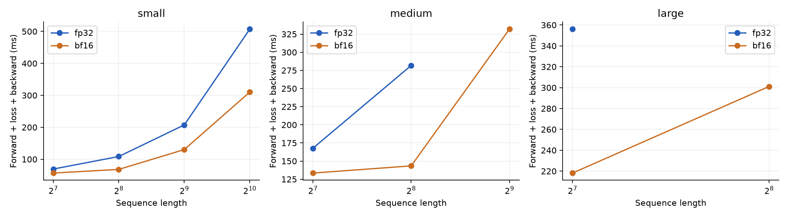
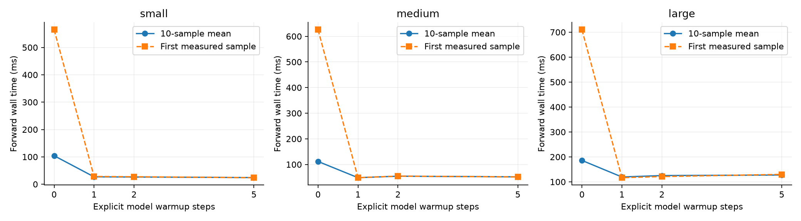
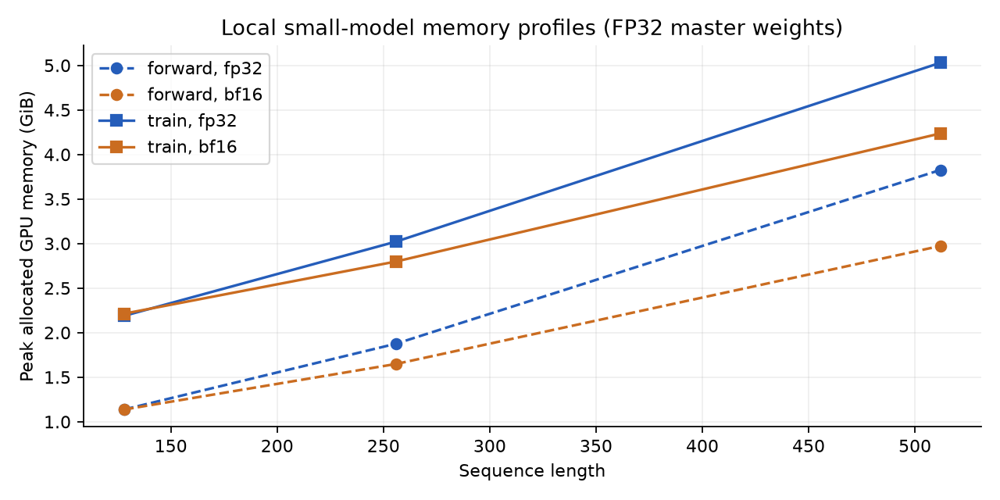
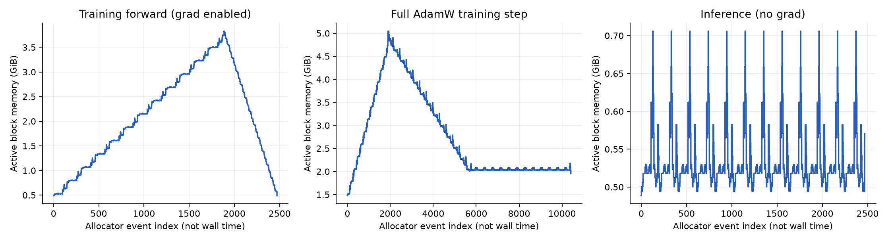

GPU：NVIDIA GeForce RTX 5070 Ti Laptop GPU（11.91GiB）。环境：CS336 / Python 3.11.18 / torch 2.7.1+cu128 / Triton 3.3.1。
本轮核心矩阵共194项：85项实测通过，6项真实allocator OOM，103项容量预检排除；另有2个no-grad推理snapshot与数值实验。所有实测使用90%的PyTorch allocator预算以避免WDDM显存回退；容量排除不是实际执行后的OOM。
| small / seq1024 / batch4 | 前向+loss+反向 ms | 峰值 allocated GiB |
|---|---|---|
| fp32 | 507.28 | 9.93 |
| bf16 | 310.23 | 7.56 |
同一配置下BF16相对FP32的加速比为 1.64×。这是随机权重/数据的性能实验，未训练真实数据集；短序列和no-grad推理的BF16显存可能因类型转换/权重缓存而增大，不能假设固定减半。
课程对应：§1.1.2–1.1.3 基线与预热；§1.1.4 Nsight；§1.1.5 混合精度；§1.1.6 显存。原始模型源码和课程测试保持不变。随机数据用于性能实验，不代表训练收敛结果。
| 实验组 | 实际测得 | 真实 allocator OOM | 容量预检排除 |
|---|---|---|---|
| baseline | 34 | 3 | 43 |
| warmup | 18 | 0 | 12 |
| profiles | 21 | 3 | 36 |
| memory | 12 | 0 | 12 |
本轮统一将 PyTorch allocator 限制为显存的90%，避免 Windows/WSL 显存回退。capacity_excluded 是根据 FP32 参数/梯度/Adam 状态和 meta 张量保留激活计算的下限，未实际运行；oom 是实际抛出的 allocator 异常。BF16 的容量预检使用更保守的全BF16符号激活下限，实际混合精度可能占用更多显存。
时间采用 perf_counter 和阶段间 CUDA 同步，包含主机调度与同步开销，zero_grad 不计入。前向计时默认保留 autograd，因此与 no_grad 推理不同。初始化在GPU上完成，loss以FP32计算，TF32关闭。正式矩阵预热5次、计时10次；profile 只采集预热后的1步；显存 snapshot 预热2次后采集1步。旧 protocol2 的部分试跑保留在上级目录，本文仅使用v3。


预热消融使用全新进程，比较0、1、2次预热与基线5次预热。首次CUDA/cuBLAS/算子路径初始化和主机开销可显著抬高首个样本；不能把冷启动均值与稳态性能混在一起。
| 配置 | 序列长度 | 模式 | 精度 | 预热 | 结果 | 耗时 ms（均值 ± 标准差） | 峰值 allocated MiB |
|---|---|---|---|---|---|---|---|
| 2.7B | 1024 | forward-backward | bf16 | 5 | capacity_excluded | — | — |
| 2.7B | 1024 | forward-backward | fp32 | 5 | capacity_excluded | — | — |
| 2.7B | 1024 | forward | bf16 | 5 | capacity_excluded | — | — |
| 2.7B | 1024 | forward | fp32 | 5 | capacity_excluded | — | — |
| 2.7B | 128 | forward-backward | bf16 | 5 | capacity_excluded | — | — |
| 2.7B | 128 | forward-backward | fp32 | 5 | capacity_excluded | — | — |
| 2.7B | 128 | forward | bf16 | 5 | capacity_excluded | — | — |
| 2.7B | 128 | forward | fp32 | 5 | capacity_excluded | — | — |
| 2.7B | 256 | forward-backward | bf16 | 5 | capacity_excluded | — | — |
| 2.7B | 256 | forward-backward | fp32 | 5 | capacity_excluded | — | — |
| 2.7B | 256 | forward | bf16 | 5 | capacity_excluded | — | — |
| 2.7B | 256 | forward | fp32 | 5 | capacity_excluded | — | — |
| 2.7B | 512 | forward-backward | bf16 | 5 | capacity_excluded | — | — |
| 2.7B | 512 | forward-backward | fp32 | 5 | capacity_excluded | — | — |
| 2.7B | 512 | forward | bf16 | 5 | capacity_excluded | — | — |
| 2.7B | 512 | forward | fp32 | 5 | capacity_excluded | — | — |
| large | 1024 | forward-backward | bf16 | 5 | capacity_excluded | — | — |
| large | 1024 | forward-backward | fp32 | 5 | capacity_excluded | — | — |
| large | 1024 | forward | bf16 | 5 | capacity_excluded | — | — |
| large | 1024 | forward | fp32 | 5 | capacity_excluded | — | — |
| large | 128 | forward-backward | bf16 | 5 | passed | 218.16 ± 2.60 | 7746.9 |
| large | 128 | forward-backward | fp32 | 5 | passed | 356.08 ± 15.95 | 7696.1 |
| large | 128 | forward | bf16 | 5 | passed | 87.80 ± 36.35 | 7659.0 |
| large | 128 | forward | fp32 | 5 | passed | 127.41 ± 2.41 | 6908.9 |
| large | 256 | forward-backward | bf16 | 5 | passed | 301.12 ± 16.85 | 10343.9 |
| large | 256 | forward-backward | fp32 | 5 | oom | — | — |
| large | 256 | forward | bf16 | 5 | passed | 92.61 ± 8.07 | 10106.8 |
| large | 256 | forward | fp32 | 5 | passed | 223.82 ± 10.52 | 10724.7 |
| large | 512 | forward-backward | bf16 | 5 | capacity_excluded | — | — |
| large | 512 | forward-backward | fp32 | 5 | capacity_excluded | — | — |
| large | 512 | forward | bf16 | 5 | capacity_excluded | — | — |
| large | 512 | forward | fp32 | 5 | capacity_excluded | — | — |
| medium | 1024 | forward-backward | bf16 | 5 | capacity_excluded | — | — |
| medium | 1024 | forward-backward | fp32 | 5 | capacity_excluded | — | — |
| medium | 1024 | forward | bf16 | 5 | capacity_excluded | — | — |
| medium | 1024 | forward | fp32 | 5 | capacity_excluded | — | — |
| medium | 128 | forward-backward | bf16 | 5 | passed | 133.49 ± 23.12 | 3551.7 |
| medium | 128 | forward-backward | fp32 | 5 | passed | 167.69 ± 15.28 | 3374.7 |
| medium | 128 | forward | bf16 | 5 | passed | 43.96 ± 1.04 | 3465.3 |
| medium | 128 | forward | fp32 | 5 | passed | 51.66 ± 0.65 | 3286.6 |
| medium | 256 | forward-backward | bf16 | 5 | passed | 143.37 ± 3.57 | 4971.7 |
| medium | 256 | forward-backward | fp32 | 5 | passed | 281.74 ± 8.22 | 5461.7 |
| medium | 256 | forward | bf16 | 5 | passed | 49.60 ± 1.84 | 4807.6 |
| medium | 256 | forward | fp32 | 5 | passed | 99.30 ± 7.92 | 5333.6 |
| medium | 512 | forward-backward | bf16 | 5 | passed | 331.91 ± 14.11 | 8669.9 |
| medium | 512 | forward-backward | fp32 | 5 | oom | — | — |
| medium | 512 | forward | bf16 | 5 | passed | 106.24 ± 7.63 | 8356.4 |
| medium | 512 | forward | fp32 | 5 | passed | 202.44 ± 13.00 | 10580.0 |
| small | 1024 | forward-backward | bf16 | 5 | passed | 310.23 ± 12.11 | 7737.5 |
| small | 1024 | forward-backward | fp32 | 5 | passed | 507.28 ± 17.30 | 10169.3 |
| small | 1024 | forward | bf16 | 5 | passed | 103.57 ± 7.76 | 7052.0 |
| small | 1024 | forward | fp32 | 5 | passed | 170.30 ± 13.73 | 9645.9 |
| small | 128 | forward-backward | bf16 | 5 | passed | 56.79 ± 8.58 | 1250.1 |
| small | 128 | forward-backward | fp32 | 5 | passed | 69.31 ± 11.36 | 1232.7 |
| small | 128 | forward | bf16 | 5 | passed | 23.54 ± 0.31 | 1164.1 |
| small | 128 | forward | fp32 | 5 | passed | 24.27 ± 0.41 | 1164.6 |
| small | 256 | forward-backward | bf16 | 5 | passed | 68.23 ± 11.65 | 1852.8 |
| small | 256 | forward-backward | fp32 | 5 | passed | 108.58 ± 6.74 | 2049.5 |
| small | 256 | forward | bf16 | 5 | passed | 23.70 ± 0.26 | 1688.2 |
| small | 256 | forward | fp32 | 5 | passed | 38.45 ± 0.74 | 1921.3 |
| small | 512 | forward-backward | bf16 | 5 | passed | 130.29 ± 7.36 | 3360.9 |
| small | 512 | forward-backward | fp32 | 5 | passed | 207.41 ± 12.70 | 4160.6 |
| small | 512 | forward | bf16 | 5 | passed | 36.54 ± 0.31 | 3044.6 |
| small | 512 | forward | fp32 | 5 | passed | 72.39 ± 7.26 | 3918.0 |
| xl | 1024 | forward-backward | bf16 | 5 | capacity_excluded | — | — |
| xl | 1024 | forward-backward | fp32 | 5 | capacity_excluded | — | — |
| xl | 1024 | forward | bf16 | 5 | capacity_excluded | — | — |
| xl | 1024 | forward | fp32 | 5 | capacity_excluded | — | — |
| xl | 128 | forward-backward | bf16 | 5 | capacity_excluded | — | — |
| xl | 128 | forward-backward | fp32 | 5 | capacity_excluded | — | — |
| xl | 128 | forward | bf16 | 5 | oom | — | — |
| xl | 128 | forward | fp32 | 5 | capacity_excluded | — | — |
| xl | 256 | forward-backward | bf16 | 5 | capacity_excluded | — | — |
| xl | 256 | forward-backward | fp32 | 5 | capacity_excluded | — | — |
| xl | 256 | forward | bf16 | 5 | capacity_excluded | — | — |
| xl | 256 | forward | fp32 | 5 | capacity_excluded | — | — |
| xl | 512 | forward-backward | bf16 | 5 | capacity_excluded | — | — |
| xl | 512 | forward-backward | fp32 | 5 | capacity_excluded | — | — |
| xl | 512 | forward | bf16 | 5 | capacity_excluded | — | — |
| xl | 512 | forward | fp32 | 5 | capacity_excluded | — | — |
| 配置 | 序列长度 | 模式 | 精度 | 预热 | 结果 | 耗时 ms（均值 ± 标准差） | 峰值 allocated MiB |
|---|---|---|---|---|---|---|---|
| 2.7B | 128 | forward-backward | fp32 | 0 | capacity_excluded | — | — |
| 2.7B | 128 | forward-backward | fp32 | 1 | capacity_excluded | — | — |
| 2.7B | 128 | forward-backward | fp32 | 2 | capacity_excluded | — | — |
| 2.7B | 128 | forward | fp32 | 0 | capacity_excluded | — | — |
| 2.7B | 128 | forward | fp32 | 1 | capacity_excluded | — | — |
| 2.7B | 128 | forward | fp32 | 2 | capacity_excluded | — | — |
| large | 128 | forward-backward | fp32 | 0 | passed | 469.37 ± 297.72 | 7696.1 |
| large | 128 | forward-backward | fp32 | 1 | passed | 347.79 ± 16.48 | 7696.1 |
| large | 128 | forward-backward | fp32 | 2 | passed | 377.38 ± 8.35 | 7696.1 |
| large | 128 | forward | fp32 | 0 | passed | 185.92 ± 184.21 | 6908.9 |
| large | 128 | forward | fp32 | 1 | passed | 119.47 ± 6.14 | 6908.9 |
| large | 128 | forward | fp32 | 2 | passed | 125.20 ± 4.90 | 6908.9 |
| medium | 128 | forward-backward | fp32 | 0 | passed | 258.65 ± 314.44 | 3374.7 |
| medium | 128 | forward-backward | fp32 | 1 | passed | 169.41 ± 12.85 | 3374.7 |
| medium | 128 | forward-backward | fp32 | 2 | passed | 155.60 ± 8.56 | 3374.7 |
| medium | 128 | forward | fp32 | 0 | passed | 111.69 ± 180.64 | 3286.6 |
| medium | 128 | forward | fp32 | 1 | passed | 48.40 ± 0.48 | 3286.6 |
| medium | 128 | forward | fp32 | 2 | passed | 54.20 ± 1.73 | 3286.6 |
| small | 128 | forward-backward | fp32 | 0 | passed | 278.83 ± 670.52 | 1232.7 |
| small | 128 | forward-backward | fp32 | 1 | passed | 74.31 ± 14.27 | 1232.7 |
| small | 128 | forward-backward | fp32 | 2 | passed | 67.23 ± 6.38 | 1232.7 |
| small | 128 | forward | fp32 | 0 | passed | 104.11 ± 162.78 | 1164.6 |
| small | 128 | forward | fp32 | 1 | passed | 26.90 ± 0.71 | 1164.6 |
| small | 128 | forward | fp32 | 2 | passed | 26.27 ± 0.79 | 1164.6 |
| xl | 128 | forward-backward | fp32 | 0 | capacity_excluded | — | — |
| xl | 128 | forward-backward | fp32 | 1 | capacity_excluded | — | — |
| xl | 128 | forward-backward | fp32 | 2 | capacity_excluded | — | — |
| xl | 128 | forward | fp32 | 0 | capacity_excluded | — | — |
| xl | 128 | forward | fp32 | 1 | capacity_excluded | — | — |
| xl | 128 | forward | fp32 | 2 | capacity_excluded | — | — |
图中只绘制passed配置；缺失的组合在完整表中列明OOM或容量排除。没有显式预热的实验仍包含CUDA初始化和权重初始化，故比较的是“无模型预热”，并非完全冷启动整个进程。
Nsight Systems CLI 2026.6.1；trace=cuda,nvtx；关闭CPU采样。cudaProfilerStart/Stop 排除模型初始化和预热；forward、loss_backward、optimizer，以及 attention_qk / attention_mask_softmax / attention_pv 由NVTX标注。原生 .nsys-rep、SQLite 与按range汇总的CSV均保留在 profiles/。NVTX嵌套range会重复包含同一个kernel，不能将所有range简单相加。
有效NVTX kernel汇总表：21。详细结论见 Nsight瓶颈分析。
| 配置 | 序列长度 | 模式 | 精度 | 预热 | 结果 | 耗时 ms（均值 ± 标准差） | 峰值 allocated MiB |
|---|---|---|---|---|---|---|---|
| 2.7B | 1024 | forward-backward | fp32 | 5 | capacity_excluded | — | — |
| 2.7B | 1024 | forward | fp32 | 5 | capacity_excluded | — | — |
| 2.7B | 1024 | train | fp32 | 5 | capacity_excluded | — | — |
| 2.7B | 128 | forward-backward | fp32 | 5 | capacity_excluded | — | — |
| 2.7B | 128 | forward | fp32 | 5 | capacity_excluded | — | — |
| 2.7B | 128 | train | fp32 | 5 | capacity_excluded | — | — |
| 2.7B | 256 | forward-backward | fp32 | 5 | capacity_excluded | — | — |
| 2.7B | 256 | forward | fp32 | 5 | capacity_excluded | — | — |
| 2.7B | 256 | train | fp32 | 5 | capacity_excluded | — | — |
| 2.7B | 512 | forward-backward | fp32 | 5 | capacity_excluded | — | — |
| 2.7B | 512 | forward | fp32 | 5 | capacity_excluded | — | — |
| 2.7B | 512 | train | fp32 | 5 | capacity_excluded | — | — |
| large | 1024 | forward-backward | fp32 | 5 | capacity_excluded | — | — |
| large | 1024 | forward | fp32 | 5 | capacity_excluded | — | — |
| large | 1024 | train | fp32 | 5 | capacity_excluded | — | — |
| large | 128 | forward-backward | fp32 | 5 | passed | 361.65 ± 0.00 | 7696.1 |
| large | 128 | forward | fp32 | 5 | passed | 120.75 ± 0.00 | 6908.9 |
| large | 128 | train | fp32 | 5 | capacity_excluded | — | — |
| large | 256 | forward-backward | fp32 | 5 | oom | — | — |
| large | 256 | forward | fp32 | 5 | passed | 218.31 ± 0.00 | 10724.7 |
| large | 256 | train | fp32 | 5 | capacity_excluded | — | — |
| large | 512 | forward-backward | fp32 | 5 | capacity_excluded | — | — |
| large | 512 | forward | fp32 | 5 | capacity_excluded | — | — |
| large | 512 | train | fp32 | 5 | capacity_excluded | — | — |
| medium | 1024 | forward-backward | fp32 | 5 | capacity_excluded | — | — |
| medium | 1024 | forward | fp32 | 5 | capacity_excluded | — | — |
| medium | 1024 | train | fp32 | 5 | capacity_excluded | — | — |
| medium | 128 | forward-backward | fp32 | 5 | passed | 162.65 ± 0.00 | 3374.7 |
| medium | 128 | forward | fp32 | 5 | passed | 54.63 ± 0.00 | 3286.6 |
| medium | 128 | train | fp32 | 5 | passed | 258.26 ± 0.00 | 6701.1 |
| medium | 256 | forward-backward | fp32 | 5 | passed | 289.01 ± 0.00 | 5461.7 |
| medium | 256 | forward | fp32 | 5 | passed | 91.09 ± 0.00 | 5333.6 |
| medium | 256 | train | fp32 | 5 | passed | 367.30 ± 0.00 | 8694.1 |
| medium | 512 | forward-backward | fp32 | 5 | oom | — | — |
| medium | 512 | forward | fp32 | 5 | passed | 198.36 ± 0.00 | 10580.0 |
| medium | 512 | train | fp32 | 5 | capacity_excluded | — | — |
| small | 1024 | forward-backward | fp32 | 5 | passed | 480.29 ± 0.00 | 10169.3 |
| small | 1024 | forward | fp32 | 5 | passed | 176.08 ± 0.00 | 9645.9 |
| small | 1024 | train | fp32 | 5 | oom | — | — |
| small | 128 | forward-backward | fp32 | 5 | passed | 68.80 ± 0.00 | 1232.7 |
| small | 128 | forward | fp32 | 5 | passed | 26.18 ± 0.00 | 1164.6 |
| small | 128 | train | fp32 | 5 | passed | 105.03 ± 0.00 | 2239.8 |
| small | 256 | forward-backward | fp32 | 5 | passed | 112.36 ± 0.00 | 2049.5 |
| small | 256 | forward | fp32 | 5 | passed | 42.09 ± 0.00 | 1921.3 |
| small | 256 | train | fp32 | 5 | passed | 159.48 ± 0.00 | 3103.0 |
| small | 512 | forward-backward | fp32 | 5 | passed | 209.27 ± 0.00 | 4160.6 |
| small | 512 | forward | fp32 | 5 | passed | 81.77 ± 0.00 | 3918.0 |
| small | 512 | train | fp32 | 5 | passed | 243.80 ± 0.00 | 5152.1 |
| xl | 1024 | forward-backward | fp32 | 5 | capacity_excluded | — | — |
| xl | 1024 | forward | fp32 | 5 | capacity_excluded | — | — |
| xl | 1024 | train | fp32 | 5 | capacity_excluded | — | — |
| xl | 128 | forward-backward | fp32 | 5 | capacity_excluded | — | — |
| xl | 128 | forward | fp32 | 5 | capacity_excluded | — | — |
| xl | 128 | train | fp32 | 5 | capacity_excluded | — | — |
| xl | 256 | forward-backward | fp32 | 5 | capacity_excluded | — | — |
| xl | 256 | forward | fp32 | 5 | capacity_excluded | — | — |
| xl | 256 | train | fp32 | 5 | capacity_excluded | — | — |
| xl | 512 | forward-backward | fp32 | 5 | capacity_excluded | — | — |
| xl | 512 | forward | fp32 | 5 | capacity_excluded | — | — |
| xl | 512 | train | fp32 | 5 | capacity_excluded | — | — |


内存曲线来自真实 PyTorch allocator history。横轴为分配事件序号而非墙钟时间；原生 memory-viz HTML 和 .pickle 同时保留。图中训练步已经完成预热，因此Adam状态在初始基线内。PyTorch snapshot 不包含CUDA上下文等allocator之外的显存。记录stack trace会产生明显开销，snapshot实验中的时间不用于无profiler性能比较。
原题2.7B配置在随附实现中实为3,406,809,600个参数，FP32参数下限12.69GiB；FP32参数、梯度和两个Adam状态的下限50.77GiB，均未包含激活。该配置本轮测得 0/12 个目标结果。原题目标尚未全部完成，需大显存GPU补测；small的snapshot属于明确标记的本地适配实验。
2.7B配置的单个FP32残差张量大小为 batch×seq×d_model×4 bytes；batch=4、d_model=2560时，长度128/256/512分别为5/10/20MiB。
本地small / seq512前向snapshot中，最大单次分配为78.125MiB，stack trace指向LM head输出的logits（4×512×10000×4 bytes）；多次48MiB分配指向Attention分数、mask和softmax（4×12×512×512×4 bytes）。源位置保存在snapshot-analysis.json与原始pickle中。这些是small适配实验的观察。
| 配置 | 序列长度 | 模式 | 精度 | 预热 | 结果 | 耗时 ms（均值 ± 标准差） | 峰值 allocated MiB |
|---|---|---|---|---|---|---|---|
| 2.7B | 128 | forward | bf16 | 2 | capacity_excluded | — | — |
| 2.7B | 128 | forward | fp32 | 2 | capacity_excluded | — | — |
| 2.7B | 128 | train | bf16 | 2 | capacity_excluded | — | — |
| 2.7B | 128 | train | fp32 | 2 | capacity_excluded | — | — |
| 2.7B | 256 | forward | bf16 | 2 | capacity_excluded | — | — |
| 2.7B | 256 | forward | fp32 | 2 | capacity_excluded | — | — |
| 2.7B | 256 | train | bf16 | 2 | capacity_excluded | — | — |
| 2.7B | 256 | train | fp32 | 2 | capacity_excluded | — | — |
| 2.7B | 512 | forward | bf16 | 2 | capacity_excluded | — | — |
| 2.7B | 512 | forward | fp32 | 2 | capacity_excluded | — | — |
| 2.7B | 512 | train | bf16 | 2 | capacity_excluded | — | — |
| 2.7B | 512 | train | fp32 | 2 | capacity_excluded | — | — |
| small | 128 | forward | bf16 | 2 | passed | 32.53 ± 0.00 | 1164.1 |
| small | 128 | forward | fp32 | 2 | passed | 34.33 ± 0.00 | 1164.6 |
| small | 128 | train | bf16 | 2 | passed | 99.75 ± 0.00 | 2265.8 |
| small | 128 | train | fp32 | 2 | passed | 101.72 ± 0.00 | 2241.1 |
| small | 256 | forward | bf16 | 2 | passed | 29.65 ± 0.00 | 1688.2 |
| small | 256 | forward | fp32 | 2 | passed | 38.15 ± 0.00 | 1921.3 |
| small | 256 | train | bf16 | 2 | passed | 117.21 ± 0.00 | 2866.0 |
| small | 256 | train | fp32 | 2 | passed | 145.37 ± 0.00 | 3094.9 |
| small | 512 | forward | bf16 | 2 | passed | 39.77 ± 0.00 | 3044.6 |
| small | 512 | forward | fp32 | 2 | passed | 78.45 ± 0.00 | 3918.0 |
| small | 512 | train | bf16 | 2 | passed | 184.03 ± 0.00 | 4337.7 |
| small | 512 | train | fp32 | 2 | passed | 253.87 ± 0.00 | 5150.3 |
| 设置 | 累加结果 | 相对真实值10的绝对误差 |
|---|---|---|
| fp32_acc_fp32_input | 10.000133514404297 | 0.000133514404296875 |
| fp16_acc_fp16_input | 9.953125 | 0.046875 |
| fp32_acc_fp16_input | 10.00213623046875 | 0.00213623046875 |
| fp32_acc_explicit_cast_fp16_input | 10.00213623046875 | 0.00213623046875 |
{
"torch.float16": {
"fc1": {
"input": "torch.float32",
"output": "torch.float16"
},
"ln": {
"input": "torch.float16",
"output": "torch.float32"
},
"fc2": {
"input": "torch.float32",
"output": "torch.float16"
},
"parameters": [
"torch.float32"
],
"logits": "torch.float16",
"loss": "torch.float32",
"gradients": [
"torch.float32"
]
},
"torch.bfloat16": {
"fc1": {
"input": "torch.float32",
"output": "torch.bfloat16"
},
"ln": {
"input": "torch.bfloat16",
"output": "torch.float32"
},
"fc2": {
"input": "torch.float32",
"output": "torch.bfloat16"
},
"parameters": [
"torch.float32"
],
"logits": "torch.bfloat16",
"loss": "torch.float32",
"gradients": [
"torch.float32"
]
}
}FP32累加可减轻重复舍入误差；将已量化的FP16输入再转回FP32，无法恢复输入量化时丢失的精度。LayerNorm的均值/方差归约对精度敏感；BF16保留FP32的指数范围，但尾数更短，不能仅凭指数范围就判断所有归约都适合低精度。
{
"fp32_loss": 9.306510925292969,
"bf16_loss": 9.306367874145508,
"logits_relative_l2": 0.0073506697081029415,
"logits_max_absolute_error": 0.013846099376678467,
"first_q_proj_gradient_relative_l2": 0.012572676874697208,
"all_bf16_gradients_finite": true
}该检查比较同一组FP32权重、输入和目标下的FP32与BF16输出、loss和第一层Q投影梯度；它不构成长期训练收敛保证。
conda activate CS336 bash scripts/run_steps456.sh python scripts/inference_memory.py python scripts/export_nsight.py python scripts/summarize_steps456.py
下一步：§1.3 的 torch.compile（原题先有§1.2.1 Attention基准），随后§1.3.1 Triton、§1.3.2 FlashAttention前向及反向。租卡比较必须在每张GPU内部计算优化加速比，保持输入、精度、软件、计时协议和allocator预算一致。2.7B完整训练建议80GB级GPU，先用同一容量预检确认目标形状能否放下。